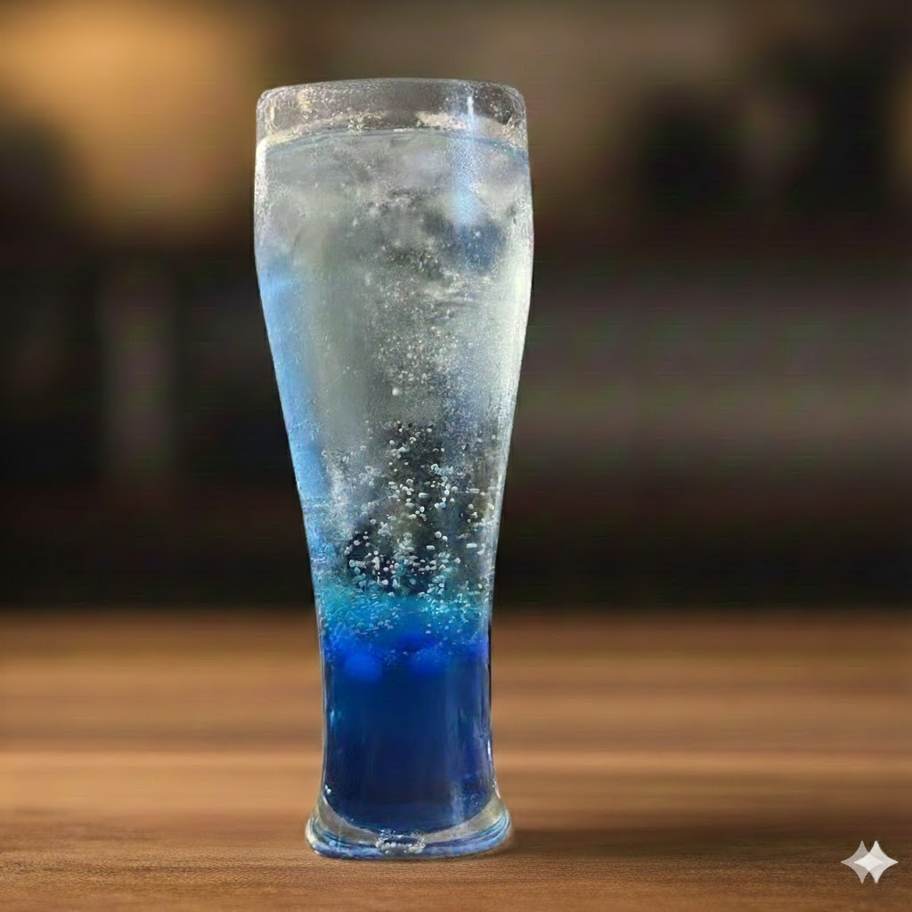
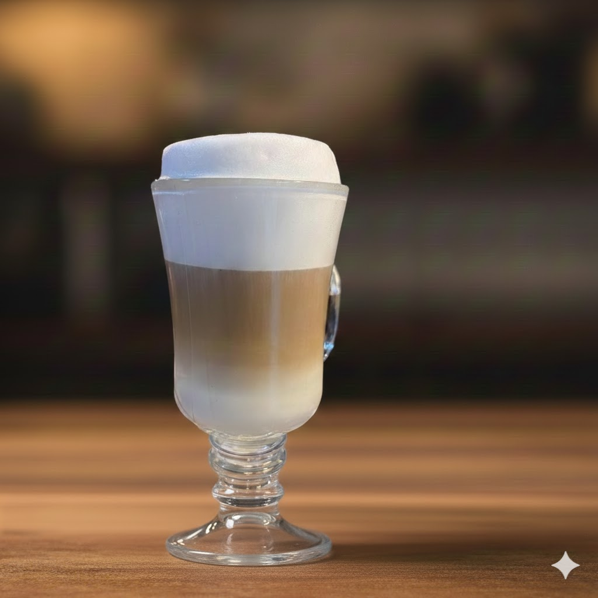
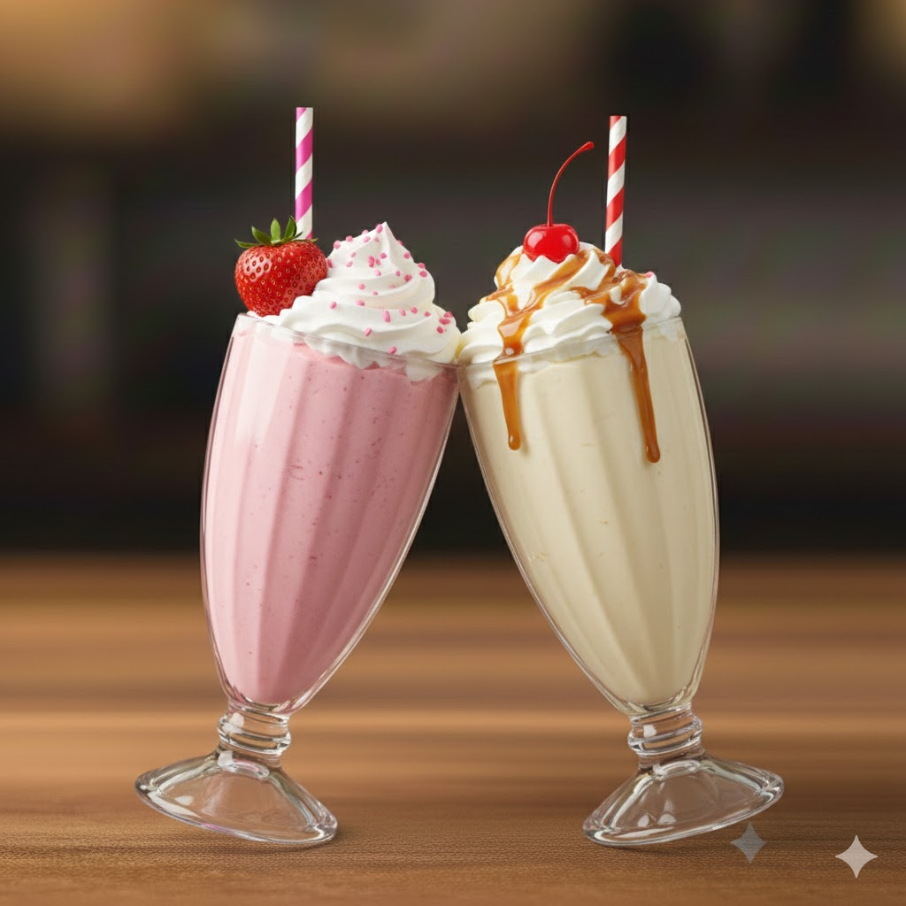
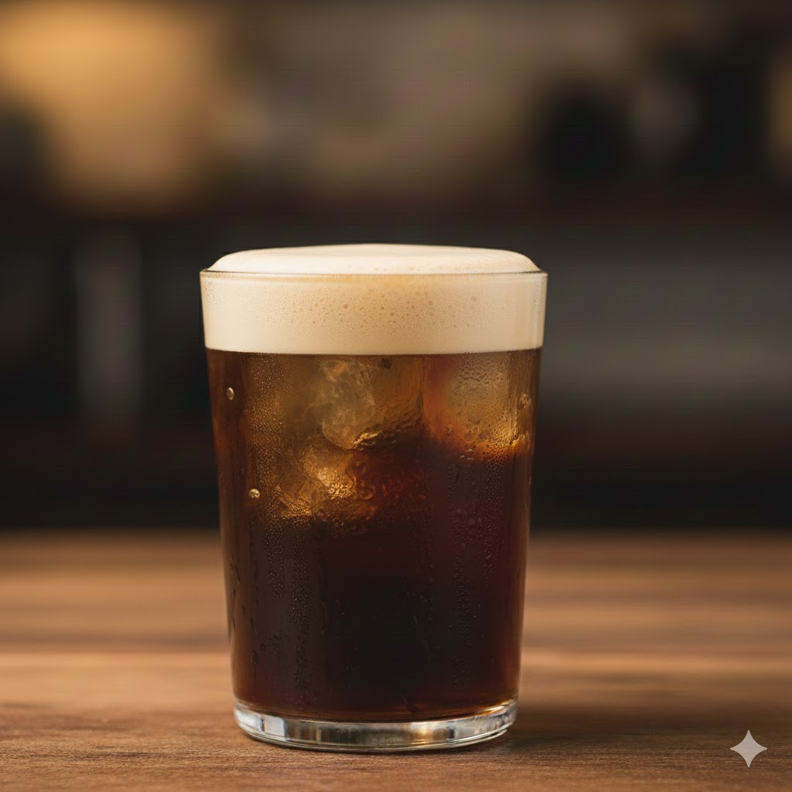
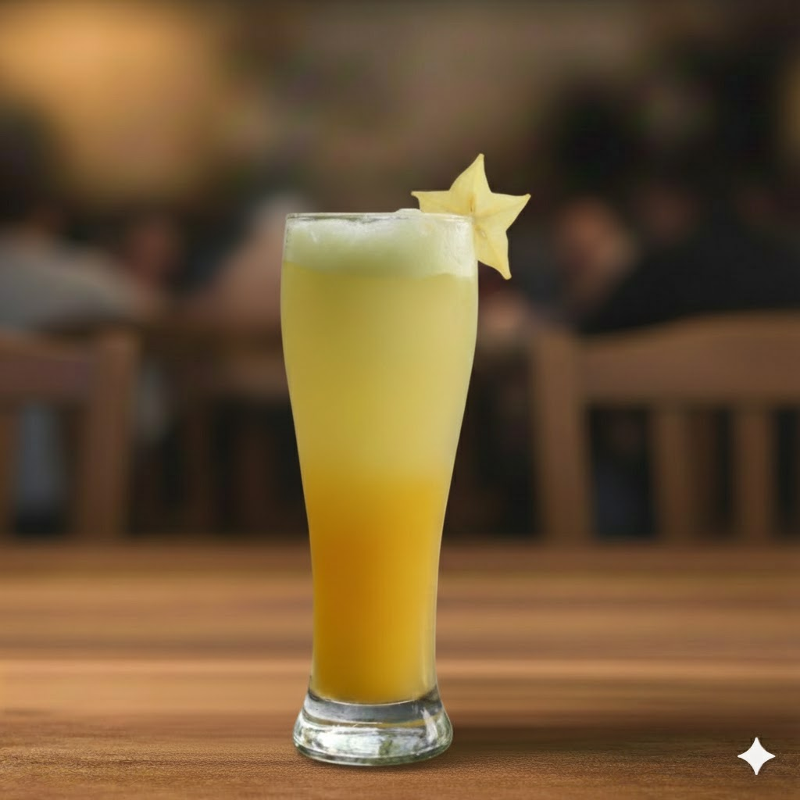
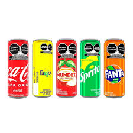
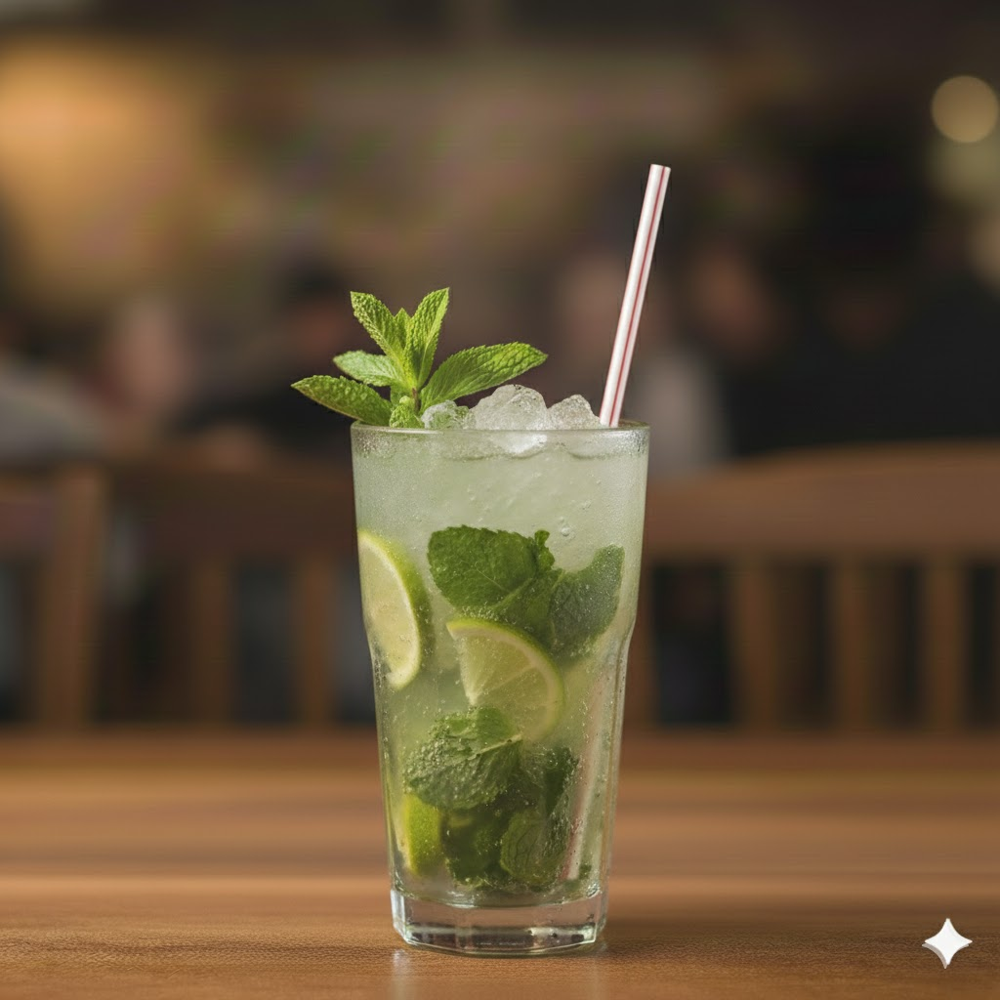

<!DOCTYPE html>
<html lang="es">
<head>
    <meta charset="UTF-8" />
    <meta name="viewport" content="width=device-width, initial-scale=1.0"/>
    <title>LA RUTA DEL ATASCÓN - Bebidas</title>
    <link rel="stylesheet" href="https://cdnjs.cloudflare.com/ajax/libs/font-awesome/6.0.0-beta3/css/all.min.css" integrity="sha512-..." crossorigin="anonymous" referrerpolicy="no-referrer" />
    <link rel="stylesheet" href="style.css" />
    <script src="https://cdnjs.cloudflare.com/ajax/libs/three.js/r128/three.min.js"></script>
    <script src="https://cdn.jsdelivr.net/npm/three@0.128.0/examples/js/loaders/GLTFLoader.js"></script>
    <script type="module" src="https://ajax.googleapis.com/ajax/libs/model-viewer/3.4.0/model-viewer.min.js"></script>
    <script type="module" src="https://ajax.googleapis.com/ajax/libs/model-viewer/3.3.0/model-viewer.min.js"></script>
    
    
</head>
</html>
    <body>
        <div id="fixed-header-container">
            <div id="top-header">
                
                <nav id="nav-links-container">
                    <a class="nav-link" href="index.html"><i class="fas fa-home"></i> Inicio</a> 
                    <a class="nav-link" href="sobre.html"><i class="fas fa-users"></i> Sobre nosotros</a> 
                    <div class="nav-item-with-submenu">
                        <a class="nav-link active" href="bebidas.html"><i class="fas fa-cocktail"></i> Bebidas</a>
                        <div class="submenu">
                            <a href="#hidra">Hidratación del pecado</a>
                        </div>
                    </div>
                    
                    <a class="nav-link " href="comida.html"><i class="fas fa-hamburger"></i> Comida</a>
                    <a class="nav-link" href="acerca.html"><i class="fas fa-info-circle"></i> Acerca de...</a>
                </nav>
            </div>
        </div>
    <div id="chatbot-launcher" onclick="toggleChat()"><i class="fas fa-comment-dots"></i></div>


<div id="chatbot-window" style="display: none;">
    <div class="chat-header">
        <span>Asistente de la ruta del atascón</span>
        <span class="chat-close" onclick="closeChat()">✕</span>
    </div>

    <div id="chat-messages" style="display: flex; flex-direction: column;">
        <div class="bot-msg">
            ¡Bienvenido! 🍔, soy "Atasquito", estoy aquí para ayudarlo.
            ¿Busca alguna recomendación o quiere ver el menú?
        </div>
    </div>

    <div class="chat-input">
        <input type="text" id="bot-input" placeholder="Pregunta por un platillo...">
        <button onclick="sendMessage()">Enviar</button>
    </div>
</div>


   <main class="menu-container">
    <h1 class="main-title" id="hidra">La Hidratación del Pecado</h1>
    
    <div class="menu-grid-content">

        <section class="menu-section menu-item-burbujeante menu-item-izq">
            <h3 class="item-name">Parada Burbujeante:</h3>
            <p class="item-description">Sodas con saborizante, refrescante agua mineral y ligeras burbujas.</p>
            <ul class="item-options">
                <li><i class="fas fa-circle"></i> Frutos Rojos</li>
                <li><i class="fas fa-circle"></i> Manzana verde</li>
                <li><i class="fas fa-circle"></i> Fresa</li>
            </ul>
            
        </section>

        
        <section class="menu-section menu-item-logo">
            <video id="anima" controls   poster="Imag/chido.png">
            <source src="Audio/anima.mp4" type="video/mp4">
            Tu navegador no soporta la etiqueta de video.
            </video> 
        </section>


        <section class="menu-section menu-item-tinto menu-item-der">
            <h3 class="item-name">Tinto del Camino</h3>
            <p class="item-description">Una bebida refrescante a base de vino tinto, fresco de jugo de naranja, perfecta para los días calurosos.</p>
            
        </section>
        
        <section class="menu-section menu-item-desvelo menu-item-izq">
            <h3 class="item-name">Ruta del Desvelo Elegante</h3>
            <p class="item-description">Café espresso con leche vaporizada y endulzada y perfecta para disfrutar un relax y energía.</p>
            <ul class="item-options">
                <li><i class="fas fa-circle"></i> Amaretto</li>
                <li><i class="fas fa-circle"></i> Vainilla</li>
                <li><i class="fas fa-circle"></i> Cocoa</li>
                <li><i class="fas fa-circle"></i> Normal</li>
            </ul>
            
        </section>


        <section class="menu-section menu-item-sacudidas menu-item-der">
            <h3 class="item-name">Sacudidas del Atascón</h3>
            <p class="item-description">Una mezcla cremosa de leche y helado con tu sabor favorito, la dulzura del atascón perfecto en cada sorbo!</p>
            <ul class="item-options">
                <li><i class="fas fa-circle"></i> Chocolate</li>
                <li><i class="fas fa-circle"></i> Vainilla</li>
                <li><i class="fas fa-circle"></i> Fresa</li>
            </ul>
            
        </section>


        
        <section class="menu-section menu-item-carajillo menu-item-izq">
            <h3 class="item-name">Carajillo</h3>
            <p class="item-description">El balance ideal entre café espresso y licor, intensa, dulce y con un toque de magia que despierta los sentidos.</p>
            
        </section>


        <section class="menu-section menu-item-citrica menu-item-izq">
            <h3 class="item-name">Parada Cítrica</h3>
            <p class="item-description">Refrescantes, naturales y llenos de sabor. Hechas con jugos cítricos frescos que equilibran lo dulce y lo ácido. ¡Lo esencial para recargar y llenarte de energía!</p>
            
        </section>

        
        <section class="menu-section menu-item-tresd">
            <model-viewer 
                src="tres/hamburguesa.glb" 
                alt="Hamburguesa 3D - La Ruta del Atascón" 
                auto-rotate 
                camera-controls 
                shadow-intensity="1" 
                loading="lazy"
                touch-action="pan-y"
                disable-zoom="false">
            </model-viewer>
        </section>
        
        

        <section class="menu-section menu-section-refrescos menu-item-der">
            <h3 class="item-name">Refrescón Obligado</h3>
            <p class="item-description">El refresco de toda la vida. </p>
            <ul class="item-options">
                <li><i class="fas fa-circle"></i> Coca</li>
                <li><i class="fas fa-circle"></i> Manzanita</li>
                <li><i class="fas fa-circle"></i> Fanta</li>
            </ul>
             
        </section>

        <section class="menu-section menu-item-mojitazo menu-item-izq">
             <h3 class="item-name">Mojitazo Puro y Santo</h3>
            <p class="item-description">Refrescante mezcla de menta, hielo y agua mineral, con un toque de limón que a todos les encanta.</p>
            <ul class="item-options">
                <li><i class="fas fa-circle"></i> Piña</li>
                <li><i class="fas fa-circle"></i> Frutos Rojos</li>
                <li><i class="fas fa-circle"></i> Fresa</li>
                <li><i class="fas fa-circle"></i> Tamarindo</li>
            </ul>
             


        </section>

                <section class="menu-section menu-item-tresd">
            <model-viewer 
                src="tres/laruta.glb" 
                alt="Hamburguesa 3D - La Ruta del Atascón" 
                auto-rotate 
                camera-controls 
                shadow-intensity="1" 
                loading="lazy"
                touch-action="pan-y"
                disable-zoom="false">
            </model-viewer>
        </section>
        
        <section class="menu-section menu-item-colada menu-item-der">
            <h3 class="item-name">Colada del Paraíso Atascado</h3>
            <p class="item-description">Una bebida cremosa y tropical refrescante con una mezcla de jugos de piña y coco, servida fría con hielo y decorada con un trozo de piña.</p>
            
        </section>
        
    </div> 
</main>
    <footer>
        <div class="contenedor">
            <div class="footer-info">
                <h2>La ruta del atascon</h2> 
                <div class="social-icons">
                    <a href="#"><i class="fab fa-facebook-f"></i></a>
                    <a href="#"><i class="fab fa-instagram"></i></a>
                </div>
                
                <div class="social-icons">
                    </div>
            </div>


            <div class="footer-form-container">
                <h3 class="titulo-footer">Comentarios</h3>
                <p class="subtitulo-footer">Lo apreciaremos mucho</p>

                <form name="formulario" method="POST" action="registro.php">
                    <div class="form-row">
                        <input type="text" name="nombre" placeholder="Nombre...">
                        <input type="email" name="email" placeholder="Email...">
                    </div>
                    
                    <textarea name="comentario" cols="30" rows="10" placeholder="Ingrese su comentario"></textarea>
                    
                    <input type="submit" value="Enviar">
                    
                </form>
               
            </div>
           
        </div>
        <BR><CENTER><p>©2025 LA RUTA DEL ATASCÓN - TODOS LOS DERECHOS RESERVADOS</p></CENTER> 
    </footer>
     
    <script src="script.js" defer></script>
    
</body>
</html>